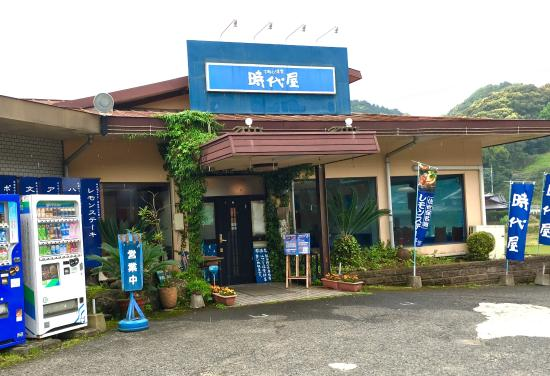

親から子へ受け継がれる
～下町の洋食屋～

佐世保市の歴史あるレストラン【下町の洋食 時代屋】。
時代屋は昭和61年にオーナーシェフ【東島 洋】氏の下にオープンしました。
御自身が生みの親である、名物料理【レモンステーキ】をはじめとする数々の料理と
お客様へのおもてなしの心
は御子息である
【東島 寿海】氏、【東島 寿明】氏の御二人へと受け継がれ、
令和の今でも県内、県外問わずに多くのお客様に愛されています。
御兄弟のお二人の下、時代屋スタッフの皆様も丁寧にお客様をもてなし、
活気あるお店の雰囲気は時代屋の名物として、人気を博しています。
本サイトでは、そんな歴史と温かさを感じることができる
下町の洋食 時代屋について、御紹介します。